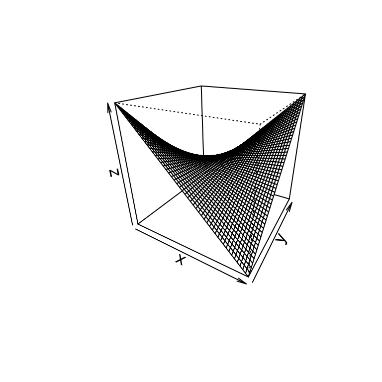

Statistics, discrete transforms, and utilities
Source:vignettes/other-modules.Rmd
other-modules.RmdThis vignette collects the smaller modules: symbolic random variables, discrete transforms and convolutions, elliptic curves, plotting, and the iteration and programming utilities.
Random variables
symcompR includes a subset of sympy.stats. Random
variables are symbols with a distribution; expectations, variances,
densities, and probabilities are computed symbolically. This module is
under active development, so the examples below stick to single random
variables and sums of expectations.
mu <- Symbol("mu", real = TRUE); s <- Symbol("s", positive = TRUE)
X <- Normal("X", mu, s)
E(X)
#> mu
E(X^2)
#> mu^2 + s^2
variance(2 * X + 1)
#> 4*s^2
std(X)
#> sFor the standard normal distribution:
Y <- Normal("Y", 0, 1)
rv_density(Y, z)
#> sqrt(2)*exp(-z^2/2)/(2*sqrt(pi))
rv_cdf(Y, z)
#> erf(sqrt(2)*z/2)/2 + 1/2
P(Gt(Y, 0))
#> 1/2
kurtosis(Y)
#> 3Other continuous distributions:
lam <- Symbol("lambda", positive = TRUE)
Tx <- Exponential("T", lam)
E(Tx)
#> 1/lambda
variance(Tx)
#> lambda^(-2)
P(Gt(Tx, 1))
#> exp(-lambda)
skewness(Tx)
#> 2
U <- Uniform("U", 0, 1)
variance(U)
#> 1/12Discrete distributions:
D <- Die("D", 6)
E(D)
#> 7/2
variance(D)
#> 35/12
P(Gt(D, 4))
#> 1/3
E(D + Die("D2", 6))
#> 7
E(Binomial("B", 10, Rational(1, 3)))
#> 10/3
variance(Binomial("B", 10, Rational(1, 3)))
#> 20/9
E(Poisson("K", lam))
#> lambdaMore distributions, with their parameters given as symbols or
numbers. GammaRV() and BetaRV() are the gamma
and beta distributions, named so that they do not mask the gamma and
beta functions.
kk <- Symbol("k", positive = TRUE); th <- Symbol("theta", positive = TRUE)
al <- Symbol("alpha", positive = TRUE); be <- Symbol("beta", positive = TRUE)
E(GammaRV("G", kk, th))
#> k*theta
variance(GammaRV("G", kk, th))
#> k*theta^2
E(BetaRV("Bt", al, be))
#> alpha/(alpha + beta)
E(ChiSquared("C", 4))
#> 4
variance(ChiSquared("C", 4))
#> 8
rv_density(StudentT("St", 2), z)
#> sqrt(2)/(4*(z^2/2 + 1)^(3/2))
rv_density(Cauchy("Cy", 0, 1), z)
#> 1/(pi*(z^2 + 1))
rv_density(LogNormal("L", 0, 1), z)
#> sqrt(2)*exp(-log(z)^2/2)/(2*sqrt(pi)*z)
E(Weibull("W", 1, 2))
#> sqrt(pi)/2
E(Pareto("Pa", 1, 3))
#> 3/2
variance(Laplace("La", 0, 2))
#> 8
E(Bernoulli("Be", Rational(1, 3)))
#> 1/3
E(Geometric("Ge", Rational(1, 4)))
#> 4moment() and cmoment() are raw and central
moments, covariance() and correlation() relate
two variables, and expectation() is a synonym of
E(). rv_sample() draws random values with R’s
random number generator.
moment(Die("D", 6), 2)
#> 91/6
cmoment(Die("D", 6), 2)
#> 35/12
X0 <- Normal("X0", 0, 1); X1 <- Normal("X1", 0, 1)
covariance(X0, 2 * X0)
#> 2
covariance(X0, X1)
#> 0
correlation(X0, 2 * X0 + 1)
#> 1
expectation(X0^2 + 3)
#> 4
set.seed(1)
length(rv_sample(X0, 3))
#> [1] 3Discrete transforms and convolutions
convolution() computes linear or cyclic convolutions of
exact sequences. These functions return lists, printed here on one line
with sstr(). The fast Fourier transform
sym_fft(), the number theoretic transform
ntt() (modulo a prime of the form c \cdot 2^k + 1), the Walsh-Hadamard
transform fwht(), and the Möbius transform are exact as
well.
show <- function(l) vapply(l, sstr, "")
show(convolution(1:3, 4:5))
#> [1] "4" "13" "22" "15"
show(convolution(1:3, 4:5, cycle = 3))
#> [1] "19" "13" "22"
F <- sym_fft(list(1, 2, 3, 4))
show(F)
#> [1] "10" "-2 - 2*I" "-2" "-2 + 2*I"
show(sym_ifft(F))
#> [1] "1" "2" "3" "4"
ntt(c(1, 2, 3, 5), 3 * 2^8 + 1)
#> [1] 11 581 766 184
intt(ntt(c(1, 2, 3, 5), 769), 769)
#> [1] 1 2 3 5
show(fwht(list(4, 2, 2, 0)))
#> [1] "8" "4" "4" "0"
show(mobius_transform(list(1, 2, 3, 4)))
#> [1] "1" "3" "4" "10"
show(covering_product(list(1, 2), list(3, 4)))
#> [1] "3" "18"
show(ifft(list(1, 2, 3, 4)))
#> [1] "5/2" "-1/2 + I/2" "-1/2" "-1/2 - I/2"
show(ifwht(list(4, 2, 2, 0)))
#> [1] "2" "1" "1" "0"
show(intersecting_product(c(1, 2, 3, 4), c(5, 6, 7, 8)))
#> [1] "103" "52" "73" "32"Cryptography
The ciphers and key exchange protocols of sympy.crypto
have their own vignette,
vignette("cryptography", package = "symcompR").
Elliptic curves
EllipticCurve(a4, a6) is the curve y^2 = x^3 + a_4 x + a_6. Points add with the
chord and tangent law.
e <- EllipticCurve(-1, 9)
e$discriminant
#> [1] -34928
e$point(0, 3) + e$point(-1, 3)
#> (1, -3)Plotting
plot() draws an expression with base R graphics, and
plot_parametric(), plot_implicit(), and
plot3d() draw parametric curves, implicit curves, and
surfaces.
plot_implicit(x^2 + y^2 - 1, list(x, -1.5, 1.5), list(y, -1.5, 1.5))
Iteration utilities
sympy.utilities.iterables provides many generators for
combinatorial enumeration (see also the combinatorics vignette).
flat <- function(l) vapply(l, paste, character(1), collapse = " ")
flat(multiset_permutations(c(1, 1, 2)))
#> [1] "1 1 2" "1 2 1" "2 1 1"
flat(generate_bell(3))
#> [1] "0 1 2" "0 2 1" "2 0 1" "2 1 0" "1 2 0" "1 0 2"
flat(permute_signs(c(0, 1, 2)))
#> [1] "0 1 2" "0 -1 2" "0 1 -2" "0 -1 -2"
flat(runs(c(0, 1, 2, 2, 1, 4, 3, 2, 3)))
#> [1] "0 1 2" "2" "1 4" "3" "2 3"
unlist(flatten(list(list(1, 2), list(3, list(4)))))
#> [1] 1 2 3 4
ibin(5, 4)
#> [1] 0 1 0 1generate_bell(n) lists the permutations of 0, \ldots, n - 1 such that consecutive ones
differ by swapping two neighbors, and runs() splits a
sequence into increasing runs.
More helpers from sympy.utilities.iterables:
sift() splits by a key, group() collects runs
of equal elements, has_dups() and
has_variety() test a sequence, rotations(),
prefixes(), and postfixes() list its rotations
and ends, unflatten() regroups it,
variations() lists ordered selections, take()
returns the first elements, dict_merge() merges named
lists, and topological_sort() orders the vertices of a
directed acyclic graph so that every edge points forward.
str(sift(1:5, function(v) v %% 2))
#> List of 2
#> $ 0: int [1:2] 2 4
#> $ 1: int [1:3] 1 3 5
flat(group(c(1, 1, 2, 2, 2, 3)))
#> [1] "1 1" "2 2 2" "3"
flat(lapply(group(c(1, 1, 2, 2, 2, 3), multiple = FALSE), unlist))
#> [1] "1 2" "2 3" "3 1"
c(has_dups(c(1, 2, 1)), has_variety(c(1, 1, 1)))
#> [1] TRUE FALSE
flat(rotations(c(1, 2, 3)))
#> [1] "1 2 3" "2 3 1" "3 1 2"
flat(prefixes(c(1, 2, 3)))
#> [1] "1" "1 2" "1 2 3"
flat(postfixes(c(1, 2, 3)))
#> [1] "3" "2 3" "1 2 3"
flat(unflatten(c(1, 2, 3, 4, 5, 6), 3))
#> [1] "1 2 3" "4 5 6"
flat(variations(c(1, 2, 3), 2))
#> [1] "1 2" "1 3" "2 1" "2 3" "3 1" "3 2"
flat(variations(c(1, 2), 2, repetition = TRUE))
#> [1] "1 1" "1 2" "2 1" "2 2"
take(0:9, 3)
#> [1] 0 1 2
str(dict_merge(list(a = 1, b = 2), list(b = 3, c = 4)))
#> List of 3
#> $ a: num 1
#> $ b: num 3
#> $ c: num 4
topological_sort(c(4, 3, 1, 2), list(c(1, 2), c(2, 3), c(1, 3), c(3, 4)))
#> [1] 1 2 3 4Programming utilities
capture() returns what a function prints,
filldedent() reflows an indented string,
memoize_property() caches a one argument function, and
public() marks a function as public (it returns it
unchanged). threaded() makes a function act elementwise on
matrices and on both sides of an equation, and on the terms of a sum;
xthreaded() does the same but leaves sums whole.
timed() measures how long a function takes.
capture(function() print(x^2))
#> [1] "x^2\n"
filldedent("
This text is indented
in the source.")
#> [1] "\nThis text is indented in the source."
sq_cached <- memoize_property(function(v) v^2)
sq_cached(3)
#> [1] 9
identical(public(sin), sin)
#> [1] TRUE
sq_th <- threaded(function(e) e^2)
sq_th(Matrix(list(list(x, 1))))
#> Matrix(1, 2)
#> [x^2, 1]
sq_th(Eq(x, 2))
#> Eq(x^2, 4)
sq_th(x + 1)
#> x^2 + 1
xthreaded(function(e) e^2)(x + 1)
#> (x + 1)^2
names(timed(function() sum(1:10)))
#> [1] "number" "time" "scaled" "unit"init_printing() chooses the default printer for the
session ("pretty" for two dimensional output,
"latex", or "str"), and
init_session() also creates the usual symbols
x, y, z, t, the
integer symbols k, m, n, and the
functions f, g, h.
interactive_traversal() walks an expression tree
interactively, so it is not run here.
old <- options(symcompR.print = NULL)
init_printing(pretty_print = TRUE)
x^2 / 2
#> 2
#> x
#> ──
#> 2
init_session(quiet = TRUE)
f(k) + n
#> n + f(k)
options(old)
x^2 / 2
#> x^2/2